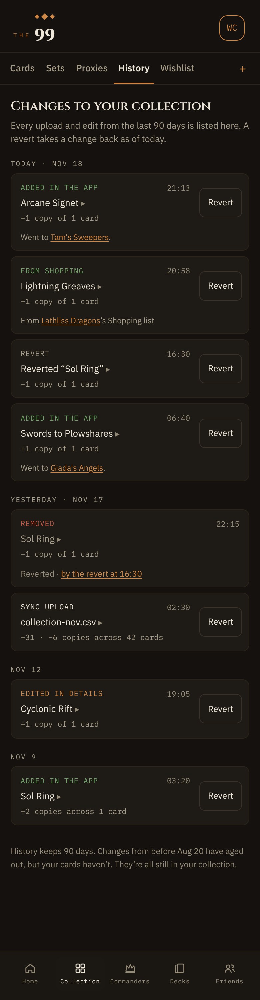
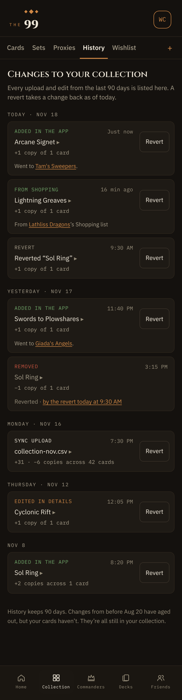

#2986 · /collection/history · 390 · reader in Denver, Wed Nov 18, 2:14 PM
The shipped History list, rendered from history-list.tsx with the same eight entries twice. Before, every time and every day heading is UTC: last night's 11:40 PM add sits under Today at 06:40. After, times and days are the reader's, and the last hour reads as minutes.
B1 · shipped (UTC)

21:13, 06:40 and “by the revert at 16:30” are all UTC. Swords to Plowshares (11:40 PM last night) lands under Today; the 7:30 PM Sync on Monday lands under Yesterday.
A1 · proposed (local)

Just now, 16 min ago, then the clock. Swords moves to Yesterday at 11:40 PM. The Sol Ring line says when the revert was: today at 9:30 AM. Days in the last week name the weekday.
Time slot (top right of each entry)
| When | Reads |
|---|---|
| Under a minute | Just now |
| Under an hour | 12 min ago |
| Older (any group) | 2:02 PM |
The day is the group heading's, so the slot never repeats it. 12 or 24 hour follows the browser's locale (14:02 in en-GB). Same mono 11.5px, same spot. The slot is a <time> with the full stamp as its tooltip: Wednesday, November 18, 2026 at 2:13 PM MST. “Just now” and “min ago” tick once a minute while the page is open and turn into the clock at an hour.
Day headings (grouped by the reader's day)
| Day | Reads |
|---|---|
| Today | TODAY · NOV 18 |
| Yesterday | YESTERDAY · NOV 17 |
| 2 to 6 days ago | MONDAY · NOV 16 |
| Older | NOV 8 |
| Another year | DEC 30, 2025 |
Midnight is the reader's midnight. Shipped mono heading style, unchanged.
Sentences that quote a time
| Where | Reads |
|---|---|
| Reverted line | Reverted · by the revert today at 9:30 AM |
| Revert confirm lede | From yesterday at 3:15 PM. Reverting this changes 1 copy. |
| Foot, empty state, aged revert | local day: before Aug 20, since Aug 1 |
One phrase for all three: just now · 12 min ago · today at 9:30 AM · yesterday at 3:15 PM · Nov 12 at 12:05 PM. Shipped “by the revert at 16:30” gave no day, so a revert from another day read as today's.